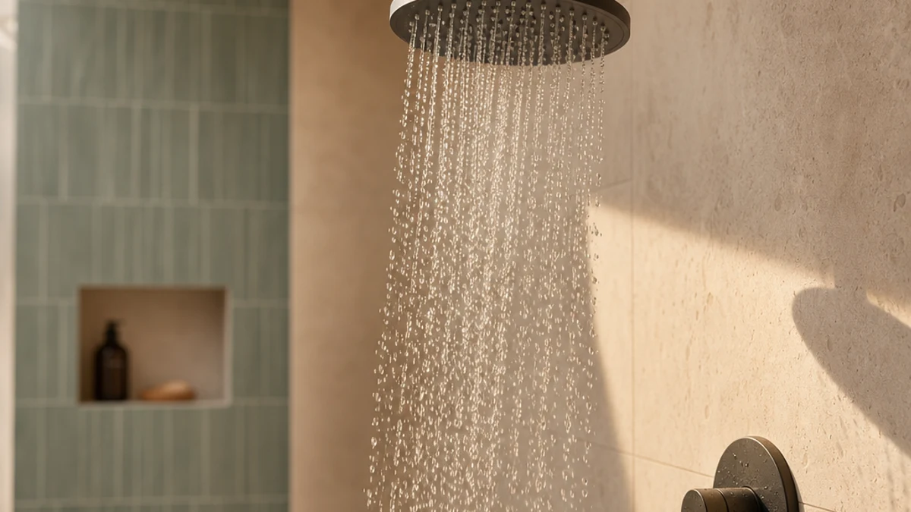

Best How to Remove Old Shower Head (2026) | Best Shower Heads
Prices and picks verified as of August 2026. Independent, reader-supported reviews.


Things to Know Before You Buy
- Most heads come off in under 15 minutes. A standard shower head threads onto a 1/2-inch arm, so you rarely need more than a wrench and a cloth.
- You do not have to shut off the main water. The connection sits above the valve, so closing the shower handle is enough to keep it dry.
- Corrosion is the usual holdup. If the head feels welded on, a soak in vinegar or penetrating oil does more than brute force.
- Protect the finish. Wrap the shower arm and nut in a cloth so the wrench teeth do not scratch the chrome.
- Have plumber's tape ready. You will need fresh thread tape before the new head goes on, so buy it now.
If you have ever wondered how to remove old shower head hardware without calling a plumber, the job is easier than it looks. A worn head that drips, sprays sideways, or runs at a trickle usually comes off with one hand and a wrench, and the whole swap takes about 15 minutes. You do not need plumbing experience, and you almost certainly already own the tools.
The one thing that trips people up is corrosion. When mineral buildup glues the connection in place, forcing it can crack the shower arm inside the wall, which turns a 15-minute task into a real repair. Below is the safe sequence: how to break the connection loose, what to do when it will not budge, and how to leave clean threads ready for a new head.
What You'll Need
- Supplies: Plumber's tape (PTFE thread tape), white vinegar or penetrating oil, and a clean rag or microfiber cloth
- Tools: An adjustable wrench and a pair of slip-joint pliers
Step 1: Turn off the shower and gather your tools
Start by closing the shower handle all the way. Because the connection you are about to remove sits above the valve, no water flows once the faucet is off, so you can skip the main shutoff for this part of the job. If your bathroom has its own dedicated shutoff, closing it adds a small margin of safety, but it is optional.
Lay your tools out where you can reach them from inside the shower: an adjustable wrench, a pair of slip-joint pliers, a clean cloth, and a roll of plumber's tape for later. Keeping everything within arm's length means you are not climbing in and out mid-job with wet hands.
Take a moment to look at the connection. Most heads attach to the shower arm with a knurled or hex-shaped nut. Knowing whether you are gripping a nut or the body of the head tells you exactly where to place the wrench in Step 3.
Step 2: Cover the drain and protect the shower arm
Drop a folded rag or a small towel over the drain. The connecting nut and any washers are easy to fumble, and a covered drain catches them before they disappear down the pipe. This one habit saves a surprising number of trips to the hardware store.
Next, protect the finish. Wrap a cloth around the shower arm and the nut you plan to grip, or slide a strip of painter's tape over the chrome. A bare wrench bites into soft plating and leaves scratch marks that show on a polished arm, which matters if you are keeping the arm and only changing the head.
If your shower arm wobbles when you push on it, the threaded joint inside the wall may be loose. Note that now. You will want to hold the arm steady in the next step so you do not transfer twisting force back into the wall while you remove the old shower head.
Step 3: Loosen the connection with a wrench
Fit the adjustable wrench snugly around the connecting nut, not the head body, and confirm the jaws are tight before you pull. A loose wrench rounds off the corners of the nut, which is the fastest way to make this job harder. Position the wrench so you can turn it counterclockwise, the standard direction to loosen a shower head.
Hold the shower arm steady with your other hand or a second pair of slip-joint pliers, then apply firm, steady pressure. Avoid sharp jerks. A smooth pull gives you control and keeps the force from snapping back into the wall. You should feel the nut break loose with a small crack as the seal gives way.
If the connection refuses to move, stop and treat the corrosion before you bear down harder. Spray the threads with penetrating oil or wrap them in a vinegar-soaked cloth, wait 20 to 30 minutes, then try again. Patience here is what separates a clean removal from a cracked shower arm.
Step 4: Unscrew and remove the old shower head
Once the nut breaks free, set the wrench aside and finish turning by hand. Hand pressure gives you a better feel for the threads and lets you catch any washer or O-ring that comes loose with the head. Keep turning counterclockwise until the old shower head lifts off the arm completely.
Look inside the nut as it comes off. You will usually find a rubber washer seated in the connector. If it stays behind on the shower arm, peel it off and discard it, because a fresh washer ships with most new heads and an old one can leak.
Set the removed head down on your covered drain or a nearby ledge. If you plan to reuse it elsewhere, rinse it now while the mineral deposits are still soft. Otherwise, you have cleared the arm and the hardest part of the job is behind you.
Step 5: Clean the threads and inspect the shower arm
With the old head gone, the threads on the shower arm are exposed. Wipe them with a cloth, then scrub off any white mineral crust or leftover tape with a small wire brush or an old toothbrush. Clean threads let the new head seat fully and seal without leaks, so this final cleanup pays off the moment you install the replacement.
Inspect the arm while you are there. Look for cracks, stripped threads, or green corrosion. If the threads are damaged, a thread-repair fitting or a new shower arm is a cheap fix and far easier to handle now than after a leak starts inside the wall.
To finish, wrap the clean threads with two or three turns of plumber's tape in the clockwise direction, pulling it snug into the grooves. The arm is now ready, and any standard shower head, including any of the upgrades below, will thread on by hand and tighten with a light turn of the wrench.
Common Mistakes to Avoid
The biggest mistake people make when they remove an old shower head is forcing a stuck connection. When mineral buildup locks the nut in place, cranking harder transfers that twisting force to the threaded joint inside the wall. Crack that joint and you have gone from a quick swap to opening drywall. If the head will not move with steady pressure, soak the threads in vinegar or penetrating oil and wait. Time beats muscle every time.
Skipping the cloth on the shower arm is another common slip. A bare wrench gouges chrome and brushed-nickel finishes, leaving marks you cannot polish out. Wrap the arm first.
People also forget which way to turn. Loosen counterclockwise as you face the connection. Turning the wrong direction tightens an already stuck nut and can round its corners.
Leaving the old plumber's tape on the threads causes leaks once the new head goes on, so clean the threads down to bare metal. Finally, do not toss the old washer before checking the new head includes one. If it does not, you will need that washer to seal the connection. Cover the drain so it cannot vanish down the pipe while you work.
Our Top Picks
Once you remove the old shower head, the arm is ready for a replacement. These three picks all thread onto a standard arm by hand, so you can install any of them in a couple of minutes using the clean threads you just prepped.

Editor’s Pick
Veken 11.8" Rain Shower Head
A wide 11.8-inch rain face that turns an ordinary shower into a drenching one, and it hand-tightens onto the arm in seconds.
$49.98
Check Price on Amazon
Best Value
Shower Head Rain Shower Head
A low-cost rain head that delivers steady coverage for the money, ideal if you want an upgrade without spending much.
$31.99
Check Price on Amazon
Premium Choice
AquaCare High Pressure 8-mode Handheld
A high-pressure handheld with eight spray modes and a flexible hose, the most versatile option if you like to direct the water.
$29.94
Check Price on AmazonHow do you remove a shower head that is stuck?
Wrap the connecting nut in a cloth, grip the shower arm with a second wrench to keep it from twisting, then turn the head counterclockwise with steady pressure.
Do I need to turn off the water to remove a shower head?
You do not have to shut off the main water supply, because the connection sits above the valve and no water flows while the faucet is off.
Frequently Asked Questions
How do you remove a shower head that is stuck?
Wrap the connecting nut in a cloth, grip the shower arm with a second wrench to keep it from twisting, then turn the head counterclockwise with steady pressure. If it still will not budge, spray the threads with penetrating oil or white vinegar, wait 20 to 30 minutes, and try again. Heat from a hair dryer can also loosen mineral buildup on a badly corroded connection.
Do I need to turn off the water to remove a shower head?
You do not have to shut off the main water supply, because the connection sits above the valve and no water flows while the faucet is off. Still, keeping the shower handle closed and covering the drain protects you from drips and from losing small parts down the pipe. If your home has a dedicated shutoff for the bathroom, closing it adds a margin of safety.
What tools do I need to remove an old shower head?
Most shower heads come off with an adjustable wrench or a pair of slip-joint pliers, a soft cloth or rag to protect the finish, and fresh plumber's tape for the new head. For a corroded connection, add penetrating oil and a small wire brush. You rarely need anything beyond what fits in a basic toolbox.
Which way do you turn a shower head to remove it?
Turn it counterclockwise as you face the connection, the standard loosen direction. Turning clockwise tightens the nut and can round off its corners if the head is already stuck. A simple way to remember it is "lefty loosey": the top of the nut moves to your left as it comes free.
Can I remove a shower head without a wrench?
Often, yes. A head that is not corroded will unscrew by hand, especially if you improve your grip with a rubber jar opener or a dry cloth. A wrench or pliers only becomes necessary when mineral buildup has locked the connection. If you do use a tool, wrap the nut first so you do not scratch the finish.
Verdict
Knowing how to remove old shower head hardware comes down to patience more than strength. Shut the faucet, protect the drain and the arm, break the nut loose counterclockwise with a wrapped wrench, then finish by hand and clean the threads. The whole job runs about 15 minutes and costs roughly $10 in tape and supplies. The only real risk is forcing a corroded connection, so when the head resists, let vinegar or penetrating oil do the work before you push harder. Once the arm is clear and the threads are wrapped with fresh plumber's tape, you are ready for a replacement. For most bathrooms, the Veken 11.8-inch Rain Shower Head is the easiest upgrade to recommend: it hand-tightens onto the arm in seconds and turns a tired shower into a full rain soak without any extra plumbing.